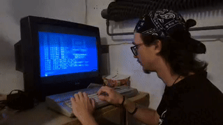

Welcome on my personal website

My name is Daniel Molda. I am a 19 year old graduate of Information and Network Technologies from the secondary vocational school in Handová.
I am mainly dedicated Linux, networking and server administration but also programming.
This year, I have started my studies at the University of Žilina (Žilinská univerzita v Žiline), at the Faculty of Management and Informatics (Fakulta riadenia a informatiky), where I am studying computer science. My goal is to focus on more server and networking subjects. In addition to my studies, I volunteer at the Free Time Center in Prievidza, helping with the organization and preparation of events. In my free time, I enjoy photography and play bass guitar in a band.
| Area | Proficiency Level |
|---|---|
| Linux (Arch/Debian based) | Intermediate |
| Networking (Cisco IOS) | Intermediate |
| Zabbix | Basics |
| Python | Intermediate |
| Java | Basics |
| C (Programing language) | Basics |
| Hardware | Intermediate |
| Web Development (HTML, CSS, PHP) | Intermediate |
I installed Proxmox VE 8.4 on my unused desktop PC. It's an HP M01-F1003nc equipped with an Intel Core i5-10400F (Comet Lake, 4.3 GHz), NVIDIA GeForce GTX 1650 Super (4 GB), 8 GB DDR4 RAM, and a 512 GB SSD. The installation process was challenging due to HP's limited Linux compatibility. I had to modify the boot parameters to get the installer running and manually install the bootloader in rescue mode to complete the setup.
I have set up a Parrot security Linux virtual machine on a Proxmox VE hypervisor, that comes preinstalled with plenty of penetration testing tools, alongside VMs running Windows 10, Linux Mint hosting Apache2 website and Fedora Server, which I currently don't have a specific use case for. Over the next few weeks, I intend to configure various vulnerabilities and insecure settings within these guest systems to create a controlled lab environment for practicing exploitation techniques and testing offensive security tools. I have alredy done autorun script for reverse shell using netcat Linux to Linux but I want to do something more complex next time.
I wanted to get more experience with BSD and other real UNIX-based operating systems, not just UNIX-like ones such as distributions of Linux. I'm curious about how BSD works differently, especially in areas like system structure, networking, and security. Later, I plan to try using FreeBSD for running lightweight servers, testing network services, and learning more about how things work behind the scenes compared to Linux.
I haven't done much with it yet because of time limitations, but I plan to explore it more in the future.

My experience with Linux is quite broad. I have worked with Debian-based distributions such as Ubuntu (both desktop and server) and Linux Mint, as well as Arch Linux.
I am experienced in using SSH for remote management and performing server maintenance. Additionally, I have used various system monitoring tools, including Glances, top, and htop.
I've been working on my laptops since 2022. Now I daily drive Debian on a Lenovo ThinkPad T480s that I bought this year. Before Debian I used Arch Linux with KDE Plasma and then Hyprland. Since I started exploring Linux distributions and upgrading my laptops, I've swapped the battery and installed the Linux Mint distribution on a Toshiba laptop. I plan to upgrade the RAM on both laptops and replace the fan on the Toshiba because it's a bit worn out. I love working on all my laptops because it allows me to learn more about hardware and different Linux distributions.
| Laptop/PC | Linux Distribution |
|---|---|
| Lenovo ThinkPad T480s |
Arch (KDE, Hyprland)
Debian (GNOME)
|
| Toshiba Portege Z830 |
Linux Mint (Cinnamon, Xfce)
Fedora Workstation (GNOME)
|
| Asus X51R |
Fedora Workstation (GNOME)
|
| Proxmox VM (HP M01-F1003nc) |
Ubuntu server (Terminal)
Fedora sevrer (Web UI, Terminal)
TrueNAS scale (Web UI, Terminal)
|

I self-hosted AdGuard Home to block ads and protect my devices from threats. It filters malicious domains, improves privacy, and keeps my whole network safer—without depending on third-party DNS services.
I chose AdGuard Home because it offers a clean and intuitive web interface, which makes it easy to manage and configure. Its simplicity was an important factor, as I wanted a reliable DNS solution without unnecessary complexity. I set up custom upstream DNS servers to ensure fast and secure domain resolution. In addition, I enabled several DNS blocklists to actively block ads, phishing attempts, tracking services, and other malicious websites. This helps protect all devices on my network while improving browsing speed and privacy.
I set up Zabbix to monitor my home network and servers. It provides real-time insights into system performance.
With Zabbix, I can track key metrics such as CPU load, memory usage, disk space, and network traffic across all my devices. The customizable dashboards give me a clear overview. Overall, Zabbix has been an invaluable tool for maintaining the reliability and efficiency of my home network.

Twingate is a modern, secure remote access solution that replaces traditional VPNs. It allows users to safely connect to private resources (like internal servers, apps, or databases) without exposing the entire network. Twingate uses a zero-trust approach, meaning each user or device only gets access to exactly what they need—nothing more.
To enable secure remote access with Twingate, I set up a dedicated virtual machine on my Proxmox server. This VM runs a Docker container with Twingate’s Connector, which serves as a secure gateway between Twingate and my private network.
After creating the VM, I installed Docker and deployed the Twingate Connector using the configuration provided in the Twingate admin panel. The setup was simple and efficient: I registered the Connector to my Twingate network, copied the auto-generated Docker run command, and launched the container. Once running, the Connector established a secure, encrypted connection to Twingate’s cloud. This allows authorized users to securely access my TrueNAS server on ports 137-139 and 445 (SMB), while I, as the administrator, can manage internal services like the AdGuard Home, TrueNAS, and Proxmox web interfaces—without exposing any part of the local network to the public internet.
I recently got an old Atari 130XE from my dad’s uncle, along with some game tapes, a tape recorder, and two joysticks. I haven't played any games because I couldn't get them running. The tape recorder probably needs the playback head cleaned.
Anyway, I was excited to try programming on it. In just half an hour, I wrote my own BASIC program that displays my name inside a flashing box. I really enjoy working with retro 8-bit computers — it’s a fun experience!
Tails (The Amnesic Incognito Live System) is a security-focused, Debian-based Linux distribution designed to protect privacy and anonymity. I discovered it while researching privacy-centric Linux systems. Tails runs entirely from a USB stick or DVD, using the computer’s RAM and leaving no trace on the host system by default, making it ideal for anonymous browsing and secure work.
One of Tails’ core features is the integration of the Tor network. The operating system includes the Tor Browser, which anonymizes internet traffic by routing it through a volunteer overlay network of at least three different relays. This makes it significantly harder to trace your IP address or physical location.
Tails also features “amnesia,” which means it doesn’t retain any data between sessions unless you explicitly choose to. However, it supports an optional encrypted persistent storage. This allows you to save specific files, system settings, additional software, and personal data securely on the USB drive, accessible only with a passphrase during startup.
In my personal setup, I’ve enabled persistent storage to install and explore various penetration testing, social engineering, and cybersecurity tools. Tails provides a safe, isolated environment for learning about digital privacy, anonymity, and ethical hacking practices without compromising the host machine.

The project was part of my maturita exam. It focused on the installation and configuration of a Linux server for hosting a website. A ZimaBoard, a compact computer, was used to enable efficient deployment of website. The project included setup of Apache2, remote access via SSH, securing the server using the UFW firewall, and the use of PHPMailer for sending encrypted emails.
The goal of the project was to set up a web server on Linux machine and create a simple website with PHP as backend. This project focused on a physical server, which allowed for a deeper understanding of hardware, server administration and network management. Compared to regular web hosting, this project provided greater control over configuration and security.


{kind=link}
{kind=link}
{kind=link}
{kind=link}
{kind=link}
{kind=link}
{kind=link}
{kind=link}
{kind=link}
{kind=link}
{kind=link}
{kind=link}
{kind=link}